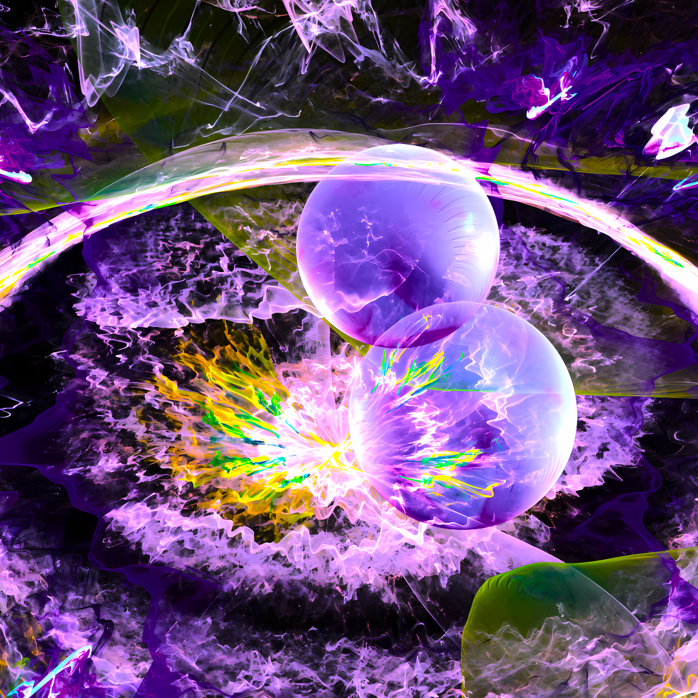

TRANSMORPHOSIS
September 24th, 2023
Phonk, inspired by METAMORPHOSIS by Interworld. My first track ever made, a messy, plain, and unbalanced phonk
music using the same sample as METAMORPHOSIS.
Due Date
March 24th, 2024
Techno, inspired by Countdown by Nikita Buyanov (geneburn). My second track, it features a drum set rhythm,
piano, synths, and piano synths in an unusual arrangement.

Metamorph Piano
March 27th, 2024
A piano cover of Metamorph by deadbladerr0r. I had to tackle the piano plugin's overbright sound to make it viable enough to for my composition. The later parts are almost impossible to play without improvisation though.